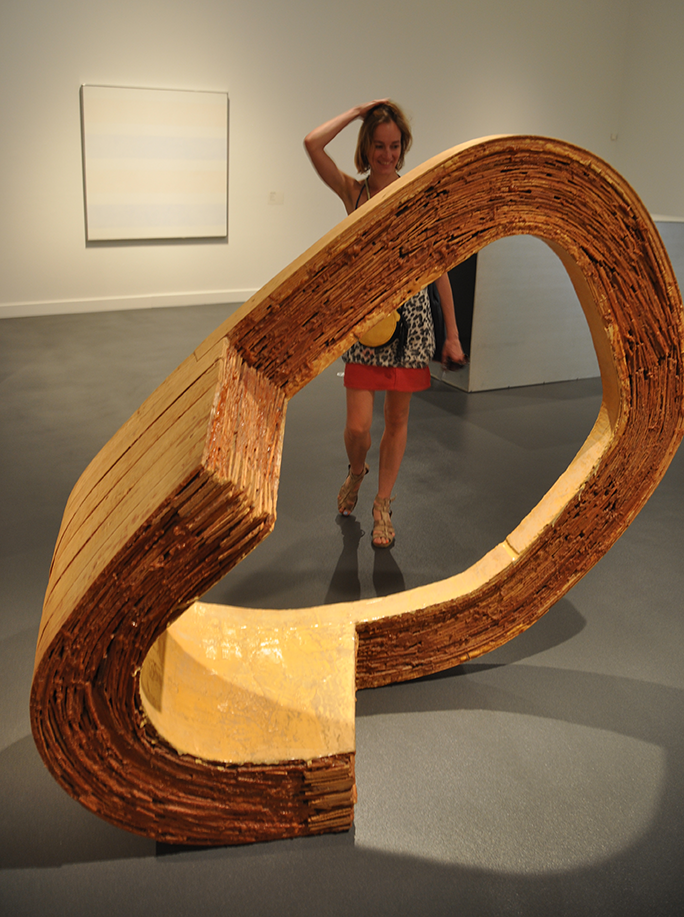

| 1988-1994 | I degree in classic violin, National Public Music School, Zielona Góra |
| 1996-2001 | State Lycee of plastic Arts, specialisation in Painting, PLSP Zielona Góra |
| 2001-2004 | Studies in Paintings Arts in the class of prof. K. Bereźnicki, ASP Gdańsk |
| 2004-2007 | Studies in Painting in the class of prof. P.C. Kowalski, Painting Department, ASP Poznan |
| 2007 | Master of Fine Arts in Painting in the studio of Profesor P.C. Kowalski |
| 2007-2008 | Assistant, Academy of Fine Arts Poznań, Painting Department |
| 2011-2012 | Assistant, Academy of Fine Arts Łódź, Visual Arts Department |
| Individual EXPOSITIONS: | |
| 2014 | Distinct memory, Theseo restaurant gallery, Barcelona, Spain |
| 2010 | "Łódź Design 2010", Wschodnia Gallery, Łódź |
| 2010 | "Twister", Wozownia Gallery, Toruń |
| 2008 | "Twister", Sztuki Gallery, Legnica |
| 2008 | "MÓZg", Bydgoszcz |
| 2007 | "Twister", Promotion Gallery PKO BP, Poznań, PL |
| 2005 | "Emanations outside, between", Gallery Pikabia, Poznań |
| Group EXPOSITIONS: | |
| 2019 | Salon Jesienny, BWA Zielona Gora |
| 2017 | FESTIVAL SECO Tinta invisible editions, Barcelona, Spain |
| 2015 | Artevistas gallery, Barcelona, Spain |
| 2014 | X Ruta del art, Castello de Empuries, Spain |
| 2013 | Hipermerc'art, Gallery Safia, Sala Vincon, Barcelona |
| 2013 | Delivery from Poland, Centre of Contemporary Art Cal Masső, Reus, Spain |
| 2013 | "Creative Roads", Art Gallery Legnica, bwa Kielce |
| 2012 | "Untouchable", Mediations Biennale, Poznań |
| 2011 | "New tendencies in Polish Painting 2", Municipal Gallery bwa in Bydgoszcz, PL |
| 2011 | "Forms of Apartments", Gallery Miejska Arsenał, Poznań |
| 2011 | "Fashions Object", ON Gallery, Poznań, MBWA Gallery, Leszno, PL |
| 2010 | "Public Space - Context", II International Painting Contest, Profil Gallery, CK Zamek Poznań |
| 2010 | "8. triennial Small Format Paintings", Wozownia Gallery, Toruń |
| 2009 | "Young painting from Wielkopolska", Bonn, Frankfurt, Berlin Belle Etage, Munchen Wiesbaden, Norynbergen |
| 2009 | "Self Portrait 2009", exposition after competition, Regional Museum, Stalowa Wola |
| 2009 | "Lines on the Sky", ON Gallery, Poznań |
| 2009 | "Survival Art Review 7", Pawilon Czterech Kopuł, Wytwórnia Filmów Fabularnych, Wrocław |
| 2009 | "more o less", mural urban art festival Hidden, Poznań |
| Grants, AWARDS: | |
| 2009 | Director's Price, "Painting in Public Space - Context", Culture Centre Zamek, Poznań |
| 2009 | Honorable Mention, "Self Portrait 2009", Museum Regional, Stalowa Wola |
| 2007 | First Price, nation-wide young painting review "Promotion 2007", Gallery Legnica |
| 2007 | Erasmus, University of Granada (Spain) |